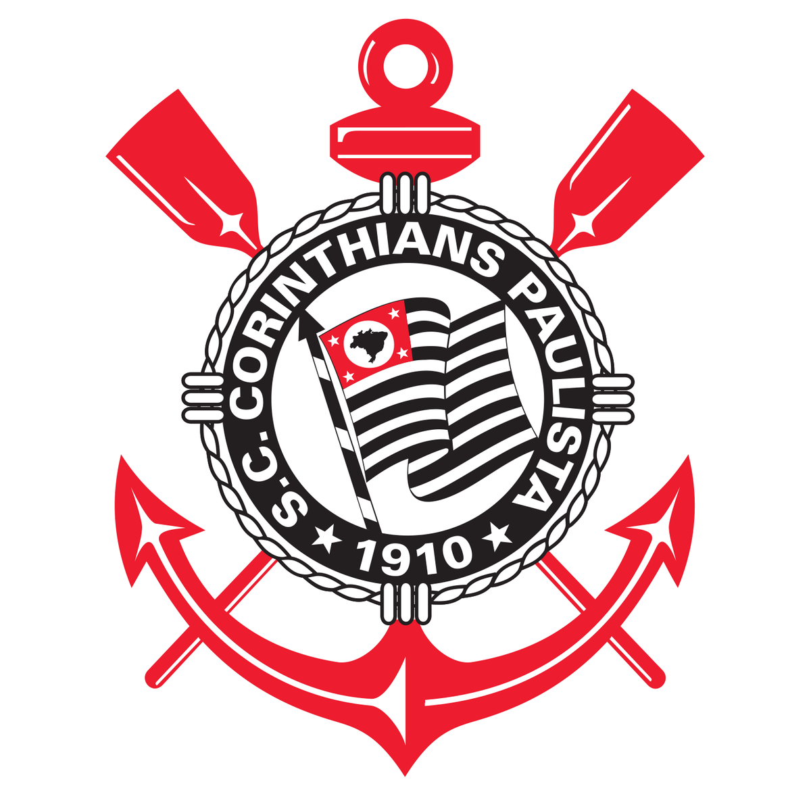
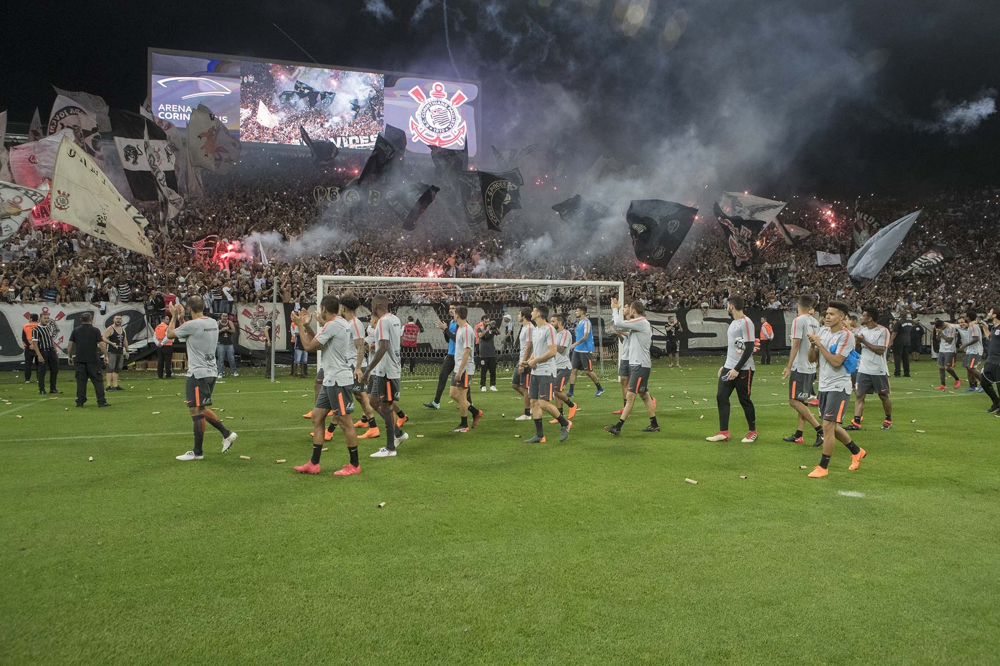
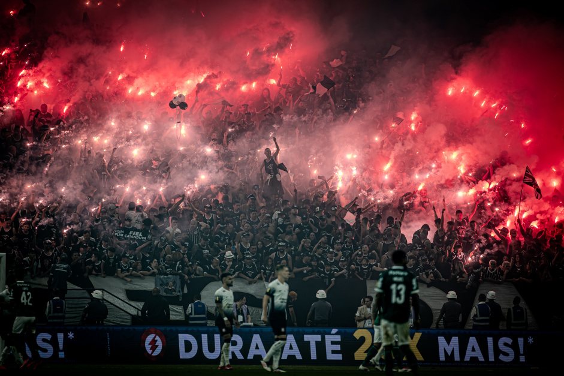
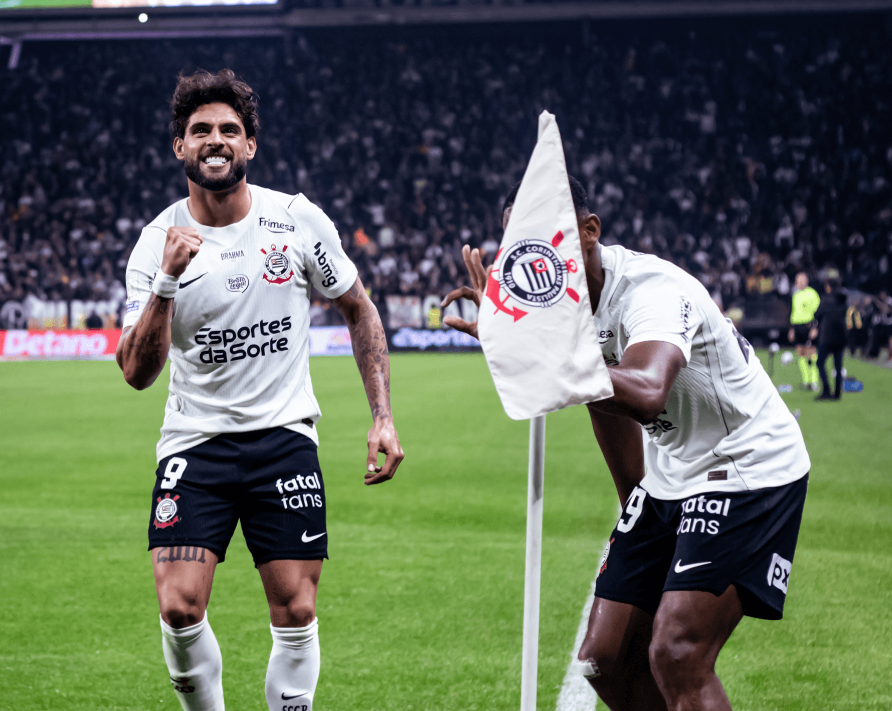

2000
Mundial de Clubes
O primeiro título mundial reconhecido pela FIFA, conquistado no Brasil.

FIEL CORINTHIANSDESDE 1910SPORT CLUB CORINTHIANS PAULISTA · 1910
Uma história feita pelo povo, construída com raça e carregada no coração de milhões de torcedores.
CONHEÇA NOSSA HISTÓRIANOSSAS RAÍZES

Em 1º de setembro de 1910, um grupo de trabalhadores do bairro do Bom Retiro, em São Paulo, deu início a uma história que atravessaria gerações.
O Sport Club Corinthians Paulista nasceu com a ideia de que o futebol também pertencia ao povo. Desde então, a camisa alvinegra passou a representar paixão, resistência e identidade.
CONHEÇA MAIS SOBRE O CLUBECONQUISTAS INESQUECÍVEIS
Momentos que entraram para a história e seguem vivos na memória da Fiel.
O primeiro título mundial reconhecido pela FIFA, conquistado no Brasil.
Uma campanha invicta e uma conquista histórica para o clube.
A vitória sobre o Chelsea e a festa inesquecível da torcida no Japão.
O primeiro Campeonato Brasileiro da história corinthiana.
Conteúdo informativo de fã. Consulte os canais oficiais para a lista completa e atualizada de conquistas.
POR DENTRO DO TIMÃO

Acompanhe o dia a dia do clube e os assuntos que movimentam a Fiel.
LER NO SITE OFICIAL
O torcedor como parte essencial da identidade alvinegra.

Confira as atualizações nos canais oficiais do Timão.
AGENDA ALVINEGRA
Consulte a agenda oficial
Data e horário sujeitos a alteraçãoA agenda não é atualizada automaticamente. Confira datas, horários e local nos canais oficiais do clube.
AQUI É CORINTHIANS
Ser Corinthians é carregar uma história que não cabe em noventa minutos.
SITE OFICIAL DO CLUBE